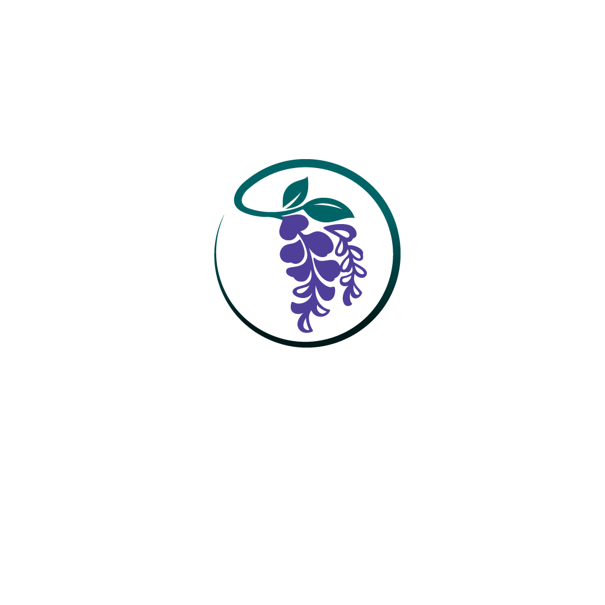

金属回収
Metal Recovery
使用済みの電子基板を中心に、貴金属・非鉄金属を回収します。基板は種類や実装されている部品によって含まれる金属が異なるため、現物を確認したうえで査定し、その根拠を開示します。
金属回収について
WisteriaBUSINESS
事業領域は多岐にわたりますが、目指すゴールは一つです。それは、日本が誇る資源とプロダクトを、必要とされる世界中の現場へと確実に繋ぐこと。現在、6つの事業を同時並行で走らせながら、新たな流通のカタチを切り拓いています。
Metal Recovery
使用済みの電子基板を中心に、貴金属・非鉄金属を回収します。基板は種類や実装されている部品によって含まれる金属が異なるため、現物を確認したうえで査定し、その根拠を開示します。
金属回収についてCold Press & HPP
コールドプレス製法と超高圧処理（HPP）を組み合わせた、加熱工程のないスムージーです。添加物は使用していません。200gパウチで4種類。
KHARISについてWagyu Beef
国内の認定工場と連携し、ブランド和牛の卸・輸出を行っています。部位別のご提案とカットに対応します。ハラル認証に対応した体制づくりを進めています。
Wisteria WAGYUについてVehicle Export
中古車と旧車の輸出です。品質検査を経て海外へ送り出します。日本の旧車は、保存状態の良さと希少性から海外での需要があります。
Industrial Drone
高圧洗浄と外壁点検、太陽光パネルの点検、融雪、牛舎などへの遮熱剤の散布を行います。足場を組まずに高所の維持管理ができます。
Sanitation Export
イベント会場や建設現場向けの衛生設備を輸出しています。